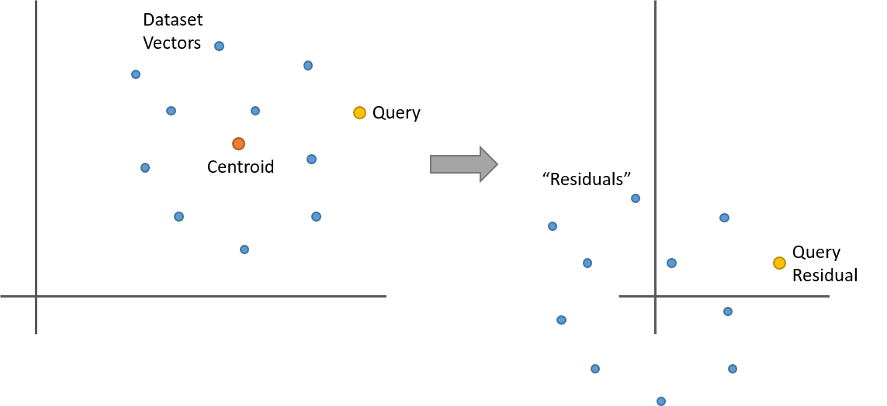
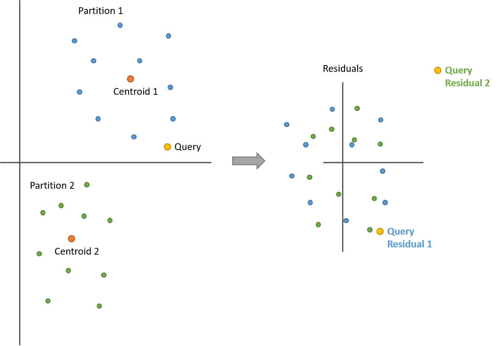

k-NN 乘积量化器教程-第2部分（译）
本教程的第1部分 讲解了乘积量化器的最基础形式。本文将讲解 FAISS 库的 IndexIVFPQ 索引，该索引类型使用一个乘积量化器以及 2011 年发表的这篇论文介绍的一些额外的技术。
下面先简要介绍一下该索引引入的两个特性，之后会再详细解释。
倒排文件索引（IVF） - IVF 就是一种数据集预过滤的技术，避免对所有向量进行穷举搜索。它的原理相当直观 - 使用 k-means 聚类算法提前将数据集聚类成一定数量的数据集分区，然后在检索时，先将查询向量与每个分区的质心做比较，找到最近的若干个聚类，然后只在这些聚类分区内做向量搜索。
残差编码 - 这是对乘积量化器基础形式的一种增强方式 - 加入 IVF 步骤的一些信息。对于每个数据库向量，不再使用 PQ 编码原始的数据库向量，而是对向量相对于所属分区的质心的偏移量（offset）进行编码。后续章节会解释其原理和收益。
倒排文件索引（Inverted File Index）
计算机科学领域，特别是信息检索领域，一个“倒排索引”是指将词汇表中的每个单词映射到数据库中所有文档中该单词出现的所有位置，它非常类似于课本中后面的索引表 - 将单词或概念映射到页号，所以大家将这种数据结构称为“倒排索引”让我有些困扰（因为于我而言它就是一种普通的索引！）。
不管怎样，在当前上下文中，这个技术实际就是使用 k-means 聚类对数据集做分割，这样就可以仅对部分分区做搜索而忽略其余的。
构建索引时，使用 k-means 聚类算法将数据集聚类成一定数量的分区。数据集中每个向量仅会被归属到一个聚类/分区中。每个分区包含归属于它的一组向量（也就是 FAISS 作者说的“倒排文件列表”）。也由此得到所有分区的质心组成的一个矩阵，用于计算应该对哪些分区进行搜索。
按照这种方式对数据集进行分割，并不完美，因为如果一个查询向量实际位于最近聚类的边缘位置，那么查询向量的最近邻居可能实际位于多个附近的聚类中。这个问题的解决方案是简单地多搜索几个分区。搜索多个附近的分区显然会占用更多的检索时间，但是准确性也会更好。
搜索的时候，将查询向量与所有分区的质心做比较，找到最近的若干个分区质心，实际的数量可以配置。一旦找到了最近的若干个分区质心，就可以仅对这些分区的数据库向量使用乘积量化器做 k-NN 搜索。
注意该索引类型中使用的如下术语：
- “probe（搜寻）” 这个动词，在当前上下文中，是指选定待搜索的目标分区。因此在代码中你会看到索引参数“nprobe” - 意思就是“待搜寻的分区数量”。
- FAISS 的作者们喜欢使用“Voronoi 单元（cells）”这个词语，而不是我在本文中使用的“数据集分区（dataset partitions）”。一个 Voronoi 单元就是属于一个聚类的空间区域，也就是，这个空间区域涵盖了对应聚类的所有点，这些点的向量与这个聚类的质心的距离，比其他聚类的质心都要近。
残差编码（Encoding Residuals）
这个特性也是相对比较直观的，不过如果你没有理解的话可能会觉得有点奇怪。其想法是将 IVF 阶段的一些信息加入到乘积量化器中，借此提升准确性（因此这个概念是建立在数据集分区技术之上的）。
先定义一下什么是“残差”向量。暂时抛开乘积量化器不谈（因为它会增大理解的困难，后面我们再把它加回来）。假设我们要做标准的暴力 k-NN 搜索，不过是用数据集分区技术来削减待搜索向量的数量。
假设我们是用 k-means 将数据集聚类成 100 个聚类（或者叫“数据集分区”）。给定数据集中的一个向量，其残差即是它相对于所属分区的质心的偏移（offset）。也就是，将数据集中的这个向量与其所属聚类的质心的向量相减。质心即是聚类的均值，那么对一组点均减去它们的均值会发生什么？现在这些点就围绕着 0 点了。如下是一个简单的二维示例：
开始有趣起来了。假设将一个数据集分区中的所有向量都替换为各自的残差向量，怎么从这个数据集分区中找到查询向量的最近邻？先计算查询向量的残差（相对于分区质心的偏移），然后对这个数据集分区的所有残差向量做最近邻搜索，得到的结果与使用原始向量做搜索是一样的！
基于上面的图示，凭直觉可能就能理解，不过还是再看看下面的等式加深理解。'x' 和 'y' 这两个向量的长度为 'n'，它们的 L2 距离计算公式为：
$$dist_{L2}\left( x,y \right) =\sqrt{\sum_{i}^{n} \left( x_{i}-y_{i} \right)^{2}}$$
如果对 'x' 和 'y' 都减去质心向量 'c'，看起来是什么样的？
$$dist_{L2}\left( x-c,y-c \right) =\sqrt{\sum_{i}^{n} \left( (x_{i}-c_{i})-(y_{i}-c_{i}) \right)^{2}} =\sqrt{\sum_{i}^{n} \left( x_{i}-y_{i} \right)^{2}}$$
质心部分被抵消掉了！
注意使用残差计算出来的距离不只是相对而言（比如距离的序）是相等的，并且确实是正确地计算出了向量之间的 L2 距离。
可能你之前就使用过这种等价关系，均值归一化（对向量减去均值）是一种常见的预处理技术。
不过目前为止说的都是单个分区内的计算。将不同分区内的向量做比较又会是什么情况呢？仍然管用，只要针对每个分区分别计算查询向量的残差即可。
下面这个图解中包含两个数据集分区。计算残差之后，两个分区的所有点都围绕在 0 点周围了。不过现在是有两个查询向量的残差 - 一个是与蓝色点集（分区 1）比较得到的，另一个是与绿色点集（分区 2）比较得到的。
前面解释过查询向量和数据库向量之间的距离，使用原始向量计算和使用残差向量计算，结果是一样的，还记得吧？
很有意思，不过目前为止还是无用功 - 尚未改变结果的准确性也没有减少计算成本。现在将 PQ 重新放进来一起考虑，就会发现好处在哪了。
在训练乘积量化器之前，先计算数据集所有分区所有向量的残差向量。残差向量集合保持原有分区（不会合并在一起），不过现在所有残差向量都围绕着 0 点，相对紧凑地聚集在一起。我们抛弃掉原始的数据集向量，只存储残差向量集。
在所有这些残差向量之上训练习得一个乘积量化器，不再使用原始向量。那有什么不同之处吗？回想一下：乘积量化器的训练过程是先将向量分割成子向量，在每部分子向量之上进行 k-means 聚类，学习到一组原型/质心（或者叫“码本”）用于表征所有向量。使用对应的残差向量来替换原始向量，能够降低数据集中向量的多样性（the variety in the dataset）（论文中，将此描述为：相对于原始向量，残差向量“包含更小的能量（have less energy）”）。之前，聚类存在于空间的各个区域，现在聚类都围绕着 0 点，并且相互之间还存在部分重合。降低了数据集中向量的多样性，就可能使用更少的原型/质心（或者说“代码”）来有效地表征向量！或者，换个角度来说，PQ 中数量有限的代码现在更加准确了，因为这些代码所要描述的向量，相比之前，相互之间区别更小了（less distinct）。我们得到了更多的回报（more bang for our buck）！
不过，也是有代价的。回想一下：乘积量化器的魔力在于仅需要将查询向量分块与码本代码之间的部分距离计算出来存为一个相对比较小的表 - 剩下的操作就是查表和加法。
现在，使用残差向量，对于每个数据集分区而言，查询向量都是不同的 - 对于每个数据集分区，查询向量对应的残差向量都需要基于分区的质心重新计算。因此，对于待搜寻的每个分区，都必须单独计算一个距离表！
不过，这个取舍显然是值得的，实际应用中，IndexIVFPQ 索引的表现都很不错。
就是这样。虽然数据库向量都被各自的残差向量替代了，不过对于乘积量化器来说，没什么不同。
注意：数据集分区并不会考虑（factor in to）码本训练，我们仍然跨越分区使用所有数据集向量为每部分子向量习得一个码本。你也可以为每个数据集分区单独训练一个 PQ，不过 FAISS 库的作者不赞成这样做，因为分区的数量通常比较大，那么存储这些码本的内存开销会是一个问题。所以，跨分区在所有数据库向量之上训练习得一个 PQ 更好一些。